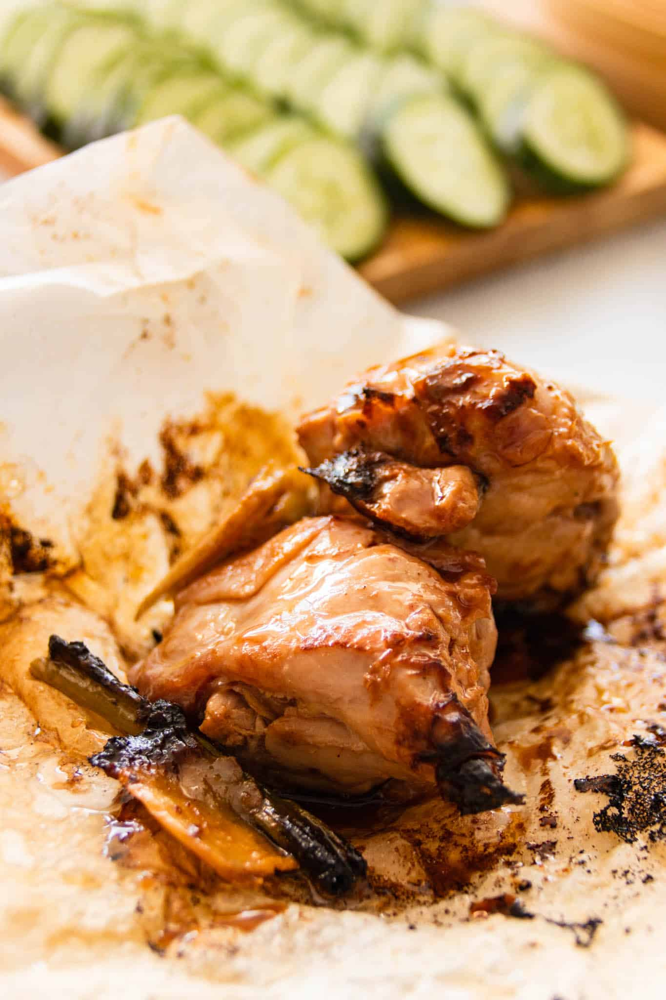

Description
Tear open these fried wrappers, and you’ll be greeted by an intense
fragrance! Paper-wrapped chicken is tender, juicy and succulent, and
juices beautifully caramelised by flavourful Asian seasonings.
Ingredients
- 1 whole chicken, about 1 to 1.2 kg, cut into 20 pieces
- 20 fresh ginger slices
- 2 spring onion stalks, cut into 2-cm lengths
- vegetable oil for deep-frying
For the marinade
- 3 tbsp light soy sauce
-
3 tbsp Chinese rice wine, preferably Shao Hsing (or use sherry or
cognac)
- 1 tbsp ginger juice
- 1 tbsp oyster sauce
- 1 tbsp sesame oil
- ½ tsp salt
- 1 tsp sugar
For wrapping
- 20 pieces baking paper, cut into 20-cm (8-inch) squares
Instructions
-
Place cut chicken pieces in a large bowl. Add all the marinade
ingredients and using your hands, rub into the meat until well mixed
and thoroughly coated. Set aside for at least 2 to 3 hours in the
chiller, stirring occasionally.
Note: For best flavour, marinade overnight in the chiller.
-
Ready the ingredients to be wrapped - chicken, ginger slices, spring
onion strips, cut paper squares, and a damp cloth for wiping your
fingers clean.
-
Start by placing the pointed end of one paper square facing you, like
a diamond. Place a slice of ginger and a few strips of spring onion in
the centre. Place a piece of chicken over it. Tuck in the end closest
to you, then both right and left sides. Then fold over once, and tuck
in the end like an envelope. Repeat for all the chicken pieces.
-
Heat up oil in a wok or Dutch oven until moderately hot, about 177° -
180°C (338° - 356°F). Deep-fry 3-4 pieces at a time, turning several
times during the cooking, about 5-6 minutes.
Caution: There's going to be quite a bit of splattering, so have an
oil splatter screen ready in case you need it.
-
Scoop out the fried wrappers with a slotted spoon or metal tongs, and
allow the oil to drain off. Place in a wire basket set over a plate to
catch any drippings. Repeat frying the remaining pieces in small
batches.
-
Transfer to a serving dish and serve immediately. Serve the chicken
pieces in their wrappers. Remember to provide a plate for the
discarded wrappers as well as a bowl of water for rinsing the fingers
or paper napkins.